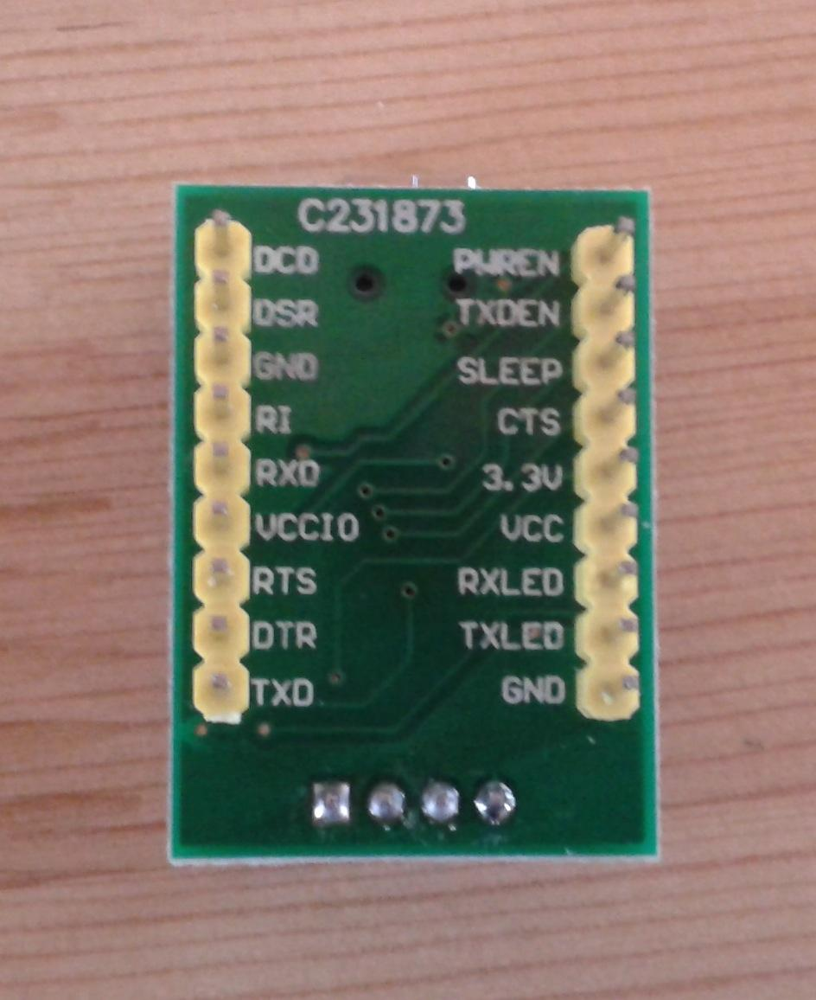

Uploading sketches to a breadboard Arduino
It turns out there there are quite a few versions of the "same" components out there. Uploading sketches to an Arduino-on-a-breadboard is trickier than it first appears.
The Arduino-on-a-breadboard showed that we can get a lower power version of the same architecture. However, in doing the measurements I used a microcontroller already loaded with the code I used for the power measurements (sleeping and blinking). Trying to change this code and upload it via the USB breakout board didn't work -- repeatedly.
It turns out that the breadboard tutorial on the Arduino web site is actually flawed for the current versions of the components concerned. There are actually two problems: the microcontroller needs to be manually reset before uploading a sketch; and the USB breakout board needs slightly more supporting electronics to talk to the microcontroller.
The first problem stems from the microcontroller needing to be reset before code can be uploaded to it. Essentially the reset makes the bootloader wait for code for a few seconds, and start the existing program if none arrives. On older Arduino models you have to physically reset the board using the reset switch just before uploading a sketch; on newer models, this reset happens automatically. Setting up the breakout board to reset the microcontroller immediately before it tries to talk to it will solve this.
The second problem is more subtle. The USB breakout board is actually a USB to serial converter. The tutorial suggests that it is enough to connect the transmit and receive (Tx and Rx) lines to the microcontroller, but this turns out not to be the case: one also needs to connect some handshaking lines to make the system synchronise and communicate correctly. I eventually found a post that explains this: however, that post is flawed too, because it relies on a particular pin-out for the USB breakout board that's different tothe one I have. So here's a debugged explanation of what needs to happen.

We need to connect the basic TxD, RxD, Vcc and Gnd lines on the breakout board as you'd expect. The picture to the right shows the the underside of my breakout board, with the pins named. If we number the pins counter-clockwise from the top left (so DCD is pin 1, TXD is 9, TXLED is 11, and VCC is 13), we connect pins 3 and 10 to ground, pin 13 to power, pin 9 to pin 2 of the ATMega microcontroller, and pin 5 to ATMega pin 3.
What now also need to happen is that we need to connect the CTS and DTR lines to something. DTR (Data Transfer Ready) is sent low when the USB has data ready: we want this to trigger a reset of at ATMega. We then need to send CTS (Clear To Send) low so that the board starts sending data. This is basic serial-port handshaking. The timing can be accomplished using an RC circuit consisting of a 100ohm resistor and a 100nF capacitor attached appropriately. Putting this circuit onto the breadboard sorts out the handshaking, and the Arduino IDE happily uploads sketches just as it would to a "real" Arduino.
The net result of this is to add some more wiring to the USB end of the Arduino breadboard:

Note the resistor and capacitor. (The red wire crossing the breakout board is a Gnd connection, needed because my breadboard only had single power rails top and bottom.) The circuit involved is as follows:

For my particular breakout board shown above, this means connecting pin 7 to the capacitor and pin 15 to the following resistor. (It's this last step that the post gets wrong -- or at least uses a different pin for CTS.) The net result is an Arduino-on-a-breadboard that looks like this:

Somewhat more complicated, but rather more functional.
I think you have to maintain a sense of perspective about these issues, annoying as they are: in many ways it's good that the components change and evolve rather than staying exactly the same, as it means that they're being developed and refined over time. On the other hand, it means you have to be very circumspect about following blindly the tutorials and explanations on blog posts from even a relatively short time ago.